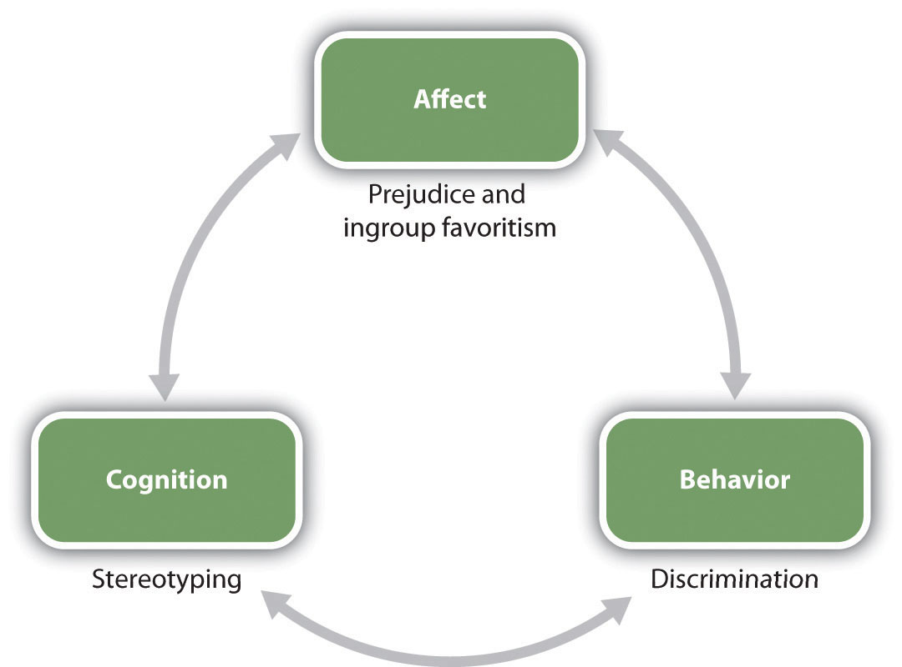

Hate crimes are fortunately very rare. They are often followed by vigils like this one in which people come together to express their support for those who have been attacked.
Image courtesy of alka3en, http://commons.wikimedia.org/wiki/File:Virginia_Tech_massacre_candlelight_vigil_Burruss.jpg.
On February 27, 2005, James Maestas, a Latino gay man from Santa Fe, New Mexico, and his companion, Joshua Stockham, were leaving a restaurant when they were approached by five men who started to become violent toward them. One of the assailants, who was 19 years old at the time, stood over Maestas and repeatedly punched him in the face and head.
Maestas was taken to St. Vincent Regional Medical Center in Santa Fe where he was treated for a broken nose and a concussion. Because he was kicked so hard in the abdomen, he also required the help of a respirator to breathe.
In the months that followed the attack, people gathered for a vigil to show their support for Maestas and even donated almost $50,000 to help pay his medical bills.
Maestas made a full recovery and said he had plans to begin classes at Santa Fe Community College. He hoped he could sit down one day and have a friendly talk with his attackers.
The assailants were charged with aggravated battery and conspiracy and tried under New Mexico’s hate crimes law, which added time to their sentences.
Source: LGBT Hate Crimes Project. (2010). James Maestas. Retrieved from http://www.lgbthatecrimes.org/doku.php/james_maestas.
Contemporary increases in globalization and immigration are leading to more culturally diverse populations in the United States and in many other countries. People from minority groups now account for over one third of the U.S. population, as well as most of the growth in its labor force. Older people are working longer, women are becoming more equally represented in a wide variety of jobs, and the ethnic mix of most occupations is also increasing (U.S. Census Bureau, 2011).U.S. Census Bureau. Retrieved from http://www.census.gov
These changes will create many benefits for society and for the individuals within it. Gender, cultural, and ethnic diversity can improve creativity and group performance, facilitate new ways of looking at problems, and allow multiple viewpoints on decisions (Mannix & Neale, 2005; van Knippenberg & Schippers, 2007).Mannix, E., & Neale, M. A. (2005). What differences make a difference? The promise and reality of diverse teams in organizations. Psychological Science in the Public Interest, 6(2), 31–55; van Knippenberg, D., & Schippers, M. C. (2007). Work group diversity. Annual Review of Psychology, 58(1), 515–541. On the other hand, as we have seen in many places in this book, perceived similarity is an extremely important determinant of liking. Members of culturally diverse groups may be less attracted to each other than are members of more homogeneous groups, may have more difficulty communicating with each other, and in some cases may actively dislike and even engage in aggressive behavior toward each other.
The principles of social psychology, including the ABCs—affect, behavior, and cognition—apply to the study of stereotyping, prejudice, and discrimination, and social psychologists have expended substantial research efforts studying these concepts (Figure 12.1). The cognitive component in our perceptions of group members is the stereotypeThe positive or negative beliefs that we hold about the characteristics of social groups.—the positive or negative beliefs that we hold about the characteristics of social groups. We may decide that “Italians are romantic,” that “old people are boring,” or that “college professors are nerds.” And we may use those beliefs to guide our actions toward people from those groups. In addition to our stereotypes, we may also develop prejudiceAn unjustifiable negative attitude toward an outgroup or toward the members of that outgroup.—an unjustifiable negative attitude toward an outgroup or toward the members of that outgroup. Prejudice can take the form of disliking, anger, fear, disgust, discomfort, and even hatred—the kind of affective states that can lead to behavior such as the gay bashing you just read about. Our stereotypes and our prejudices are problematic because they may create discriminationUnjustified negative behaviors toward members of outgroups based on their group membership.—unjustified negative behaviors toward members of outgroups based on their group membership.
Although violence against members of outgroups is fortunately rare, stereotypes, prejudice, and discrimination nevertheless influence people’s lives in a variety of ways. Stereotypes influence our academic performance (Shapiro & Neuberg, 2007), Shapiro, J. R., & Neuberg, S. L. (2007). From stereotype threat to stereotype threats: Implications of a multi-threat framework for causes, moderators, mediators, consequences, and interventions. Personality and Social Psychology Review, 11(2), 107–130. doi: 10.1177/1088868306294790 the careers that we chose to follow (Zhang, Schmader, Forbes, 2009),Zhang, S., Schmader, T., & Forbes, C. (2009). The effects of gender stereotypes on women’s career choice: Opening the glass door. In M. Barreto, M. K. Ryan, & M. T. Schmitt (Eds.), The glass ceiling in the 21st century: Understanding barriers to gender equality (pp. 125–150). Washington, DC: American Psychological Association. our experiences at work (Fiske & Lee, 2008),Fiske, S. T., & Lee, T. L. (2008). Stereotypes and prejudice create workplace discrimination. In A. P. Brief (Ed.), Diversity at work (pp. 13–52). Cambridge, UK: Cambridge University Press. and the amount that we are paid for the work that we do (Jackson, 2011; Wood & Eagly, 2010).Jackson, L. M. (2011). The psychology of prejudice: From attitudes to social action. Washington, DC: American Psychological Association; Wood, W., & Eagly, A. H. (2010). Gender. In S. T. Fiske, D. T. Gilbert, & G. Lindzey (Eds.), Handbook of social psychology (5th ed., Vol. 1, pp. 629–667). Hoboken, NJ: John Wiley & Sons.
Figure 12.1
Relationships among social groups are influenced by the ABCs of social psychology.
Stereotypes and prejudice have a pervasive and often pernicious influence on our responses to others, and also in some cases on our own behaviors. To take one example, social psychological research has found that our stereotypes may in some cases lead to stereotype threatPerformance decrements that are caused by the knowledge of cultural stereotypes.—performance decrements that are caused by the knowledge of cultural stereotypes. Spencer, Steele, and Quinn (1999)Spencer, S. J., Steele, C. M., & Quinn, D. M. (1999). Stereotype threat and women’s math performance. Journal of Experimental Social Psychology, 35, 4–28. found that when women were reminded of the (untrue) stereotype that “women are poor at math” they performed more poorly on math tests than when they were not reminded of the stereotype, and other research has found stereotype threat in many other domains as well. We’ll consider the role of stereotype threat in more detail later in this chapter.
In one particularly disturbing line of research about the influence of prejudice on behaviors, Joshua Correll and his colleagues had White participants participate in an experiment in which they viewed photographs of White and Black people on a computer screen. Across the experiment, the photographs showed the people holding either a gun or something harmless such as a cell phone. The participants were asked to decide as quickly as possible to press a button to “shoot” if the target held a weapon but to “not shoot” if the person did not hold a weapon. Overall, the White participants tended to shoot more often when the person holding the object was Black than when the person holding the object was White, and this occurred even when there was no weapon present (Correll, Park, Judd, & Wittenbrink, 2007; Correll et al., 2007).Correll, J., Park, B., Judd, C. M., & Wittenbrink, B. (2007). The influence of stereotypes on decisions to shoot. European Journal of Social Psychology, 37(6), 1102–1117. doi: 10.1002/ejsp.450; Correll, J., Park, B., Judd, C. M., Wittenbrink, B., Sadler, M. S., & Keesee, T. (2007). Across the thin blue line: Police officers and racial bias in the decision to shoot. Journal of Personality and Social Psychology, 92(6), 1006–1023. doi: 10.1037/0022–3514.92.6.1006
Discrimination is a major societal problem because it is so pervasive, takes so many forms, and has such negative effects on so many people. Even people who are paid to be unbiased may discriminate. Price and Wolfers (2007)Price, J., & Wolfers, J. (2007). Racial discrimination among NBA referees. NBER Working Paper #13206. Cambridge, MA: National Bureau of Economic Research. found that White players in National Basketball Association games received fewer fouls when more of the referees present in the game were White, and Black players received fewer fouls when more of the referees present in the game where Black. The implication is—whether they know it or not—the referees were discriminating on the basis of race.
I’m sure that you have had some experiences where you found yourself responding to another person on the basis of a stereotype or a prejudice, and perhaps the fact that you did surprised you. Perhaps you then tried to get past these beliefs and to react to the person more on the basis of his or her individual characteristics. We like some people and we dislike others—this is natural—but we should not let a person’s skin color, gender, age, religion, or ethnic background make these determinations for us. And yet, despite our best intentions, we may end up making friends only with people who are similar to us and perhaps even avoiding people whom we see as different.
In this chapter, we will study the processes by which we develop, maintain, and make use of our stereotypes and our prejudices. We will consider the negative outcomes of those beliefs on the targets of our perceptions, and we will consider ways that we might be able to change those beliefs, or at least help us stop acting upon them. Let’s begin by considering the cognitive side of our group beliefs—focusing primarily on stereotypes—before turning to the important role of feelings in prejudice.